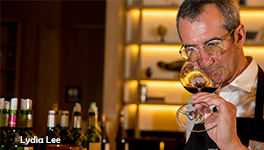

|

To highlight the richness of the region’s wine varieties, three trade lunches were organized around New York City. On September 19th, guests were guided through a taste tour of the Côtes de Gascogne, Madiran, and Saint Mont, at Rebelle. On October 24th, an exclusive lunch at Aldo Sohm Wine Bar fêted the wines of Bergerac-Duras with Marine Dubard from Château Laulerie. Finally, on November 7th, the diverse offerings from the Gaillac appellation were enjoyed alongside respected representatives at Little Park. Each lunch was hosted by a native son of Southwest France, Toulouse’s own André Compeyre, Chef Sommelier at Aldo Sohm Wine Bar.
|
Join what is sure to be a fascinating conversation on Twitter taking place December 6th, from 9pm to 10pm. Led by Master Sommelier June Rodil
(@JuneRodil), wine experts and enthusiasts will share their ideas and opinions using the hashtag #WinesofSWFrance. Select influencers from the wine world will discuss a selection of wines they received from five different appellations—Fronton, Gaillac, Madiran, Marcillac, and Saint Mont—so be sure to follow #WinesofSWFrance for an exciting and educational hour.
|